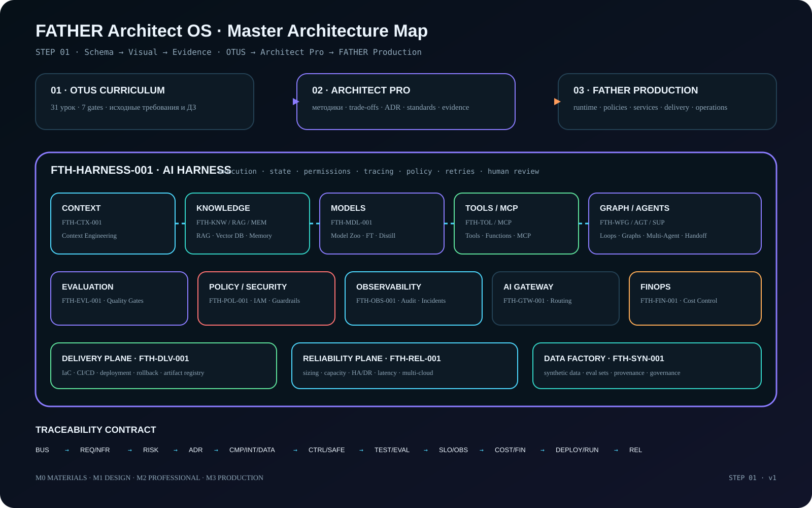

Что дано в программе, какие исходные материалы и требования к результату существуют.
STEP 01 · Master Architecture Map
От уроков OTUS к боевой AI-платформе
Одна модель в двух представлениях: строгая инженерная схема и быстрый визуальный poster. Оба представления используют одни component IDs, одну трассировку и один capability manifest.
Visual layer
Capability Poster
Быстрое восприятие архитектуры: curriculum → professional method → production runtime.

Three-layer contract
Три уровня одной темы
Как задача решается профессионально: standards, trade-offs, ADR, шаблоны, red flags, evidence.
В какой runtime/service/control превращается тема и чем подтверждается её production-зрелость.
Machine-readable model
Production capabilities
Карточки ниже строятся из data/capabilities.json.
Traceability
Контракт доказательности
Definition of Done STEP 01
- Engineering map существует.
- Capability poster существует.
- Component IDs зафиксированы.
- Machine-readable manifest существует.
- OTUS ↔ capability ↔ FATHER mapping доступен.
- GAP явно перечислены в документе и дневнике.